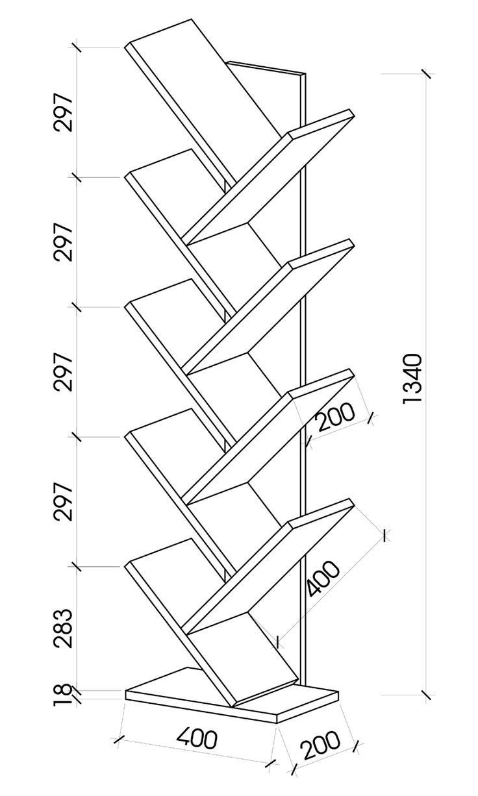

This bookstand was made based on a design from Pinterest.
I found it an interesting design and therefore chose to make it myself, however there was a big isssue with the bottom of the design.
As also seen in the inspiration is there at the bottom a plank mounted under a 45 degree angle.
Which was a challenging hurdle, because i had no power tools available and had not yet developed the skills to do it with a manual saw.
The solution was to change the design and make a triangular base that did not need sawing on a 45 degree angle.
The result of this became the bookstand seen on the picture, that says first iteration below.
After sometime i had figured out the skill to saw on an angle, so decided to make the bookstand more like the original design.
The result of this is noted down as the second iteration.
Plans are already made to do a third iteration, this one will follow the original design closely.
However there is one big change, the bookstand will have the height of a room.

This design
from Pinterest functioned as the inspiration of all the iterations.
First iteration of the bookstand, in this version it has a triangular base. Second iteration of the bookstand, in this version it has a straight base.